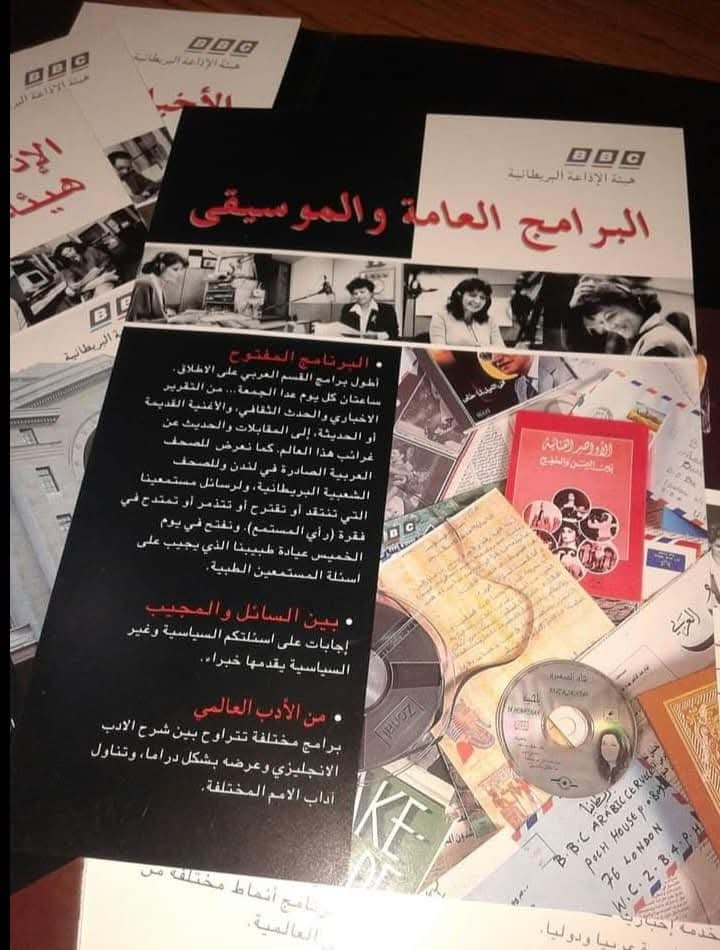
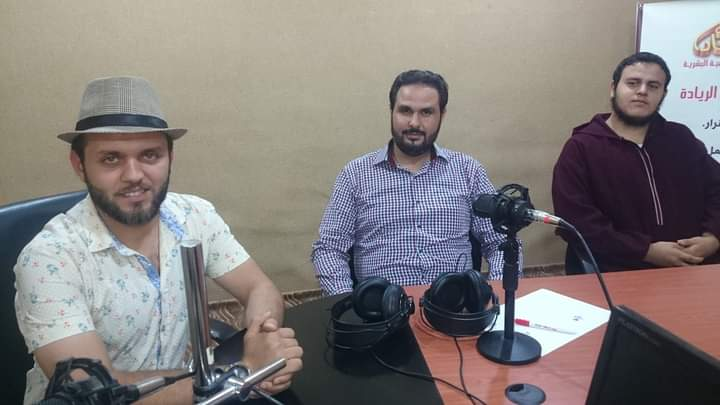
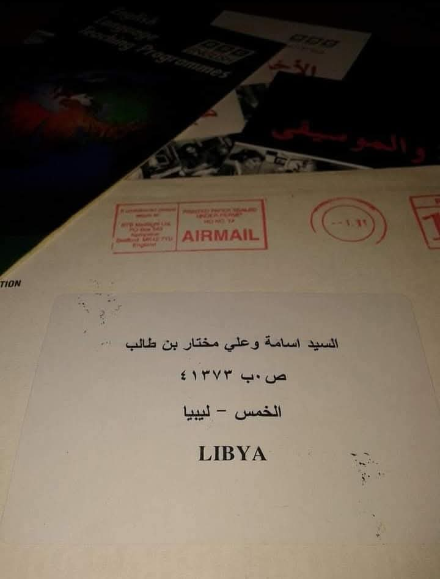

محاولات لصياغة علامة تجمع بين الحرف والبيت، وتترجم روح العمارة في لغة بصرية بسيطة.
مهندس معماري • باحث • كاتب
مهندس معماري وباحث في الأكاديمية الليبية للدراسات العليا، بخبرة في الإدارة والتحرير الصحفي والتدريب. أكتب وأصمم، وأشارك هنا محطات من أعمالي ومؤلفاتي.
 الخمس، ليبيا
الخمس، ليبياالخمس، ليبيا • مهندس معماري وباحث في الأكاديمية الليبية للدراسات العليا
حاصل على بكالوريوس الهندسة المعمارية، وباحث في الأكاديمية الليبية للدراسات العليا. جمعت خبرتي بين العمل المعماري والقيادة الإدارية والتحرير الصحفي والتدريب، إلى جانب التأليف والتصميم والفنون.
مساحات من التجربة
محاولات لصياغة علامة تجمع بين الحرف والبيت، وتترجم روح العمارة في لغة بصرية بسيطة.

مطبوعات ومواد ثقافية تلتقي مع خبرة التحرير الصحفي وتصميم الصحف.

مساحة للاستماع وتبادل الأفكار، حيث يلتقي الصوت بالتجربة الإنسانية.

وثيقة من رحلةٍ شخصية؛ تذكيرٌ بأن لكل مشروع بداية، ولكل فكرة طريقاً تعبره.
مساحات جاهزة لإضافة الأعمال
مساحة مخصصة لمشاريع النمذجة المعمارية.
مساحة للتصاميم والمعالجات البصرية.

مساحة لمواقع ومشاريع النشر الإلكتروني.
مساحة لأعمال المونتاج والفيديو.
مساحة لمقاطع الفيديو القصيرة والمحتوى المرئي.
مساحة للشعارات والرسوم والتصميم الطباعي.
مساحة للنمذجة والإظهار ثلاثي الأبعاد.
مساحة للمخططات والرسم الهندسي.
مساحة لمشاريع التصميم ونمذجة معلومات المباني.
مساحة للتصيير المعماري والمشاهد المرئية.
مساحة للنمذجة والتصميم المعماري ثلاثي الأبعاد.
من المجلدات إلى مساحة واحدة
خبرات في الإدارة والإعلام والعمل العام
جامعة المرقب
المجلس البلدي الخمس — تكليف بالندب
جامعة المرقب
الاتحاد الوطني لعمال ليبيا — الخمس
جامعة المرقب
ليبيا
ورئاسة لجنة تسيير الإعلام والثقافة بالخمس في سبتمبر 2011
التحرير الصحفي رئيس تحرير صحيفة المستقبل وصحيفة رواد المستقبل الجامعية.
العمل الثقافي رئيس مجلس إدارة منظمة صوت الخمس للثقافة والتنمية الاجتماعية.
العمل المعماري ممارسة العمل المعماري في مجال التخصص.
كتب ومقالات وقصص
كتاب مشترك ضمن المؤلفات المنشورة.
صدرت عن منشورات وزارة الثقافة والمجتمع المدني عام 2013.
ورد صدوره عام 2015 ضمن مؤتمر «رواية قالون» بجامعة المرقب.
صدر عام 2015.
عمل قصصي ضمن المسيرة الأدبية.
التجربة الماليزية السنغافورية وإمكانية تطبيقها في ليبيا، وموسوعة ليبيا الشاملة.
مقالات منشورة في صحف محلية وعربية ومواقع إلكترونية، منها شبابيك المالطية، وأويا، ومجلة البيت الليبية.
طرابلس الممنوعة • لبدة الحضارة • العرب والعربية في ليبيا • مرابطو طرابلس الغرب
خبرات عملية وبرامج متخصصة
ممارسة معمارية، وتصميم ثلاثي الأبعاد وبرامج الرسم الهندسي.
تصميم الصحف والمواقع، والمونتاج والموشن جرافيك والتعليق الصوتي.
تدريب تنمية المهارات، والقيادة والإدارة المحلية، ومدرب معتمد للرخصة الدولية لقيادة الحاسوب ICDL.
رسم زيتي ومائي، وتطوير تطبيقات بسيطة للأندرويد وiOS، وخبرة في نماذج الذكاء الاصطناعي.
الإدارة المحلية في طرابلس • إدارة المجالس المحلية في سنغافورة وماليزيا • القيادة الإدارية في إسطنبول • برامج العمارة وفنون الجرافيك في مصر • لغتا الإيطالية والإنجليزية (مستوى تمهيدي)
مشاركة ثقافية ومهنية
إقامة معارض فنية داخل ليبيا وخارجها، والحصول على جائزة على مستوى ليبيا عام 2007.
2007من ألبوم التجربة
الخمس • ليبيا
للتواصل بشأن العمارة، أو التدريب، أو التعاون الإعلامي والثقافي.
العودة إلى البداية ↑